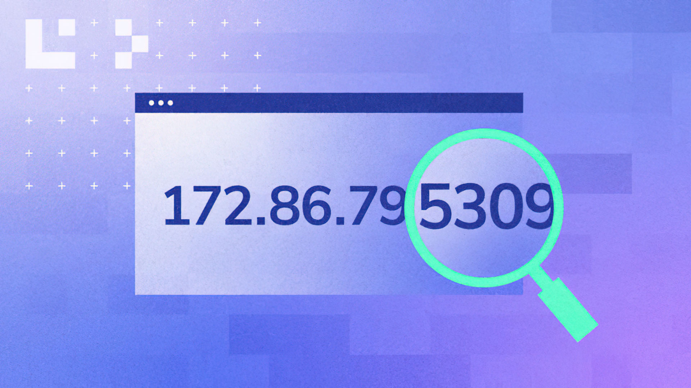
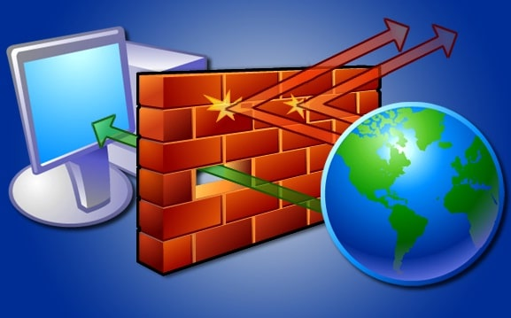

| Adresse IP | Une adresse IP (Internet Protocol address) est une étiquette numérique attribuée par votre fournisseur d'accès à Internet. Utilisée pour identifier votre appareil parmi des milliards d'autres, l'adresse IP est un peu comme une adresse personnelle en ligne. |  |
| Serveur | Un serveur informatique offre des services accessibles via un réseau. Il peut être matériel ou logiciel, c'est un ordinateur qui exécute des opérations suivant les requêtes effectuées par un autre ordinateur appelé « client » |  |
| Pare-Feu | Un pare-feu est un système de sécurité de réseau informatique qui limite le trafic Internet entrant, sortant ou à l'intérieur d'un réseau. |  |